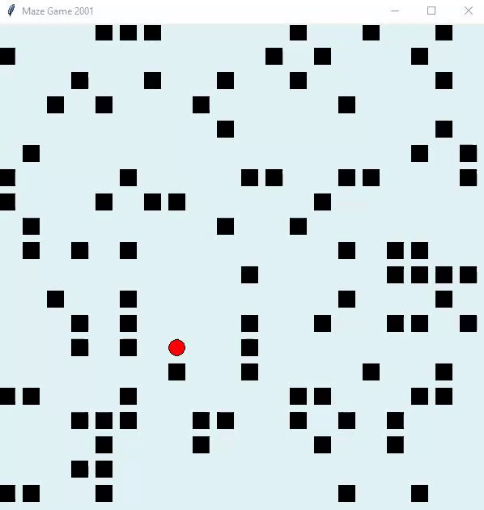

1
Игра «Лабиринт»
сложнона компьютере
Создай игру «Лабиринт» на tkinter: поле с препятствиями и игрок, который ходит клавишами W, A, S, D.
Предыдущие шаги этой игры: урок 8, задание 4, урок 9, задание 1, урок 10, задание 2.

🖥️ Эту задачу нужно запускать в VS Code на компьютере (модули вроде turtle и tkinter не работают в браузере).
Показать ответ (сначала попробуй сам!)
from tkinter import *
from random import randint
from time import sleep
CANVAS_SIZE = 600
BASE_SIZE = CANVAS_SIZE // 20
TITLE = 'Maze Game 2001'
OBSTACLE = 'o'
TERRAIN = '_'
PLAYER = 'x'
OBSTACLE_SIZE = CANVAS_SIZE // BASE_SIZE
PLAYER_SIZE = CANVAS_SIZE // BASE_SIZE
BG_COLOR = '#e2f3f5'
DIFFICULTY = {'easy': 20, 'normal': 30, 'hard': 40}
class Field(Tk):
def __init__(self):
super().__init__()
self.canvas = Canvas(height=CANVAS_SIZE, width=CANVAS_SIZE, bg=BG_COLOR)
self.canvas.pack()
self.canvas.focus_set()
self.canvas.bind('<Key>', self.button_event)
self.player_pos = 0, 0
self.player_id = None
self.field = []
def obstacle(self, pos_x, pos_y):
o_size = OBSTACLE_SIZE
self.canvas.create_rectangle(pos_x, pos_y, pos_x + o_size, pos_y + o_size, fill='black')
def player(self, pos_x, pos_y):
p_size = PLAYER_SIZE
self.player_id = self.canvas.create_oval(pos_x, pos_y, pos_x + p_size, pos_y + p_size, fill='red')
def create_obstacles(self, difficulty):
count = range(OBSTACLE_SIZE)
tmp_row = []
for _ in count:
tmp_row = []
for j in count:
if randint(0, 100) <= difficulty:
tmp_row.append(OBSTACLE)
else:
tmp_row.append(TERRAIN)
self.field.append(tmp_row)
def place_player(self):
x_pos = randint(0, PLAYER_SIZE - 1)
y_pos = randint(0, PLAYER_SIZE - 1)
self.field[x_pos][y_pos] = PLAYER
self.player_pos = x_pos, y_pos
def render_field(self):
f_len = range(len(self.field))
for i in f_len:
for j in f_len:
if self.field[i][j] == OBSTACLE:
self.obstacle(i * BASE_SIZE, j * BASE_SIZE)
elif self.field[i][j] == PLAYER:
self.player(i * BASE_SIZE, j * BASE_SIZE)
elif self.field[i][j] == TERRAIN:
pass
def button_event(self, event):
key = event.char
if key == 'w':
self.move_up()
elif key == 's':
self.move_down()
elif key == 'a':
self.move_left()
elif key == 'd':
self.move_right()
def move_up(self):
pos_x = self.player_pos[0]
pos_y = self.player_pos[1]
if self.field[pos_x][pos_y - 1] == TERRAIN and pos_y > 0:
self.canvas.move(self.player_id, 0, -BASE_SIZE)
self.field[pos_x][pos_y - 1] = PLAYER
self.field[pos_x][pos_y] = TERRAIN
self.player_pos = pos_x, pos_y - 1
def move_left(self):
pos_x = self.player_pos[0]
pos_y = self.player_pos[1]
if self.field[pos_x - 1][pos_y] == TERRAIN and pos_x > 0:
self.canvas.move(self.player_id, -BASE_SIZE, 0)
self.field[pos_x - 1][pos_y] = PLAYER
self.field[pos_x][pos_y] = TERRAIN
self.player_pos = pos_x - 1, pos_y
def move_right(self):
pos_x = self.player_pos[0]
pos_y = self.player_pos[1]
if pos_x + 1 >= len(self.field):
pos_x = len(self.field) - 2
if self.field[pos_x + 1][pos_y] == TERRAIN and pos_x <= len(self.field):
self.canvas.move(self.player_id, BASE_SIZE, 0)
self.field[pos_x + 1][pos_y] = PLAYER
self.field[pos_x][pos_y] = TERRAIN
self.player_pos = pos_x + 1, pos_y
def move_down(self):
pos_x = self.player_pos[0]
pos_y = self.player_pos[1]
if pos_y + 1 >= len(self.field):
pos_y = len(self.field) - 2
if self.field[pos_x][pos_y + 1] == TERRAIN and pos_y <= len(self.field):
self.canvas.move(self.player_id, 0, BASE_SIZE)
self.field[pos_x][pos_y + 1] = PLAYER
self.field[pos_x][pos_y] = TERRAIN
self.player_pos = pos_x, pos_y + 1
game = Field()
game.title(TITLE)
game.create_obstacles(DIFFICULTY['easy'])
game.place_player()
game.render_field()
game.mainloop()